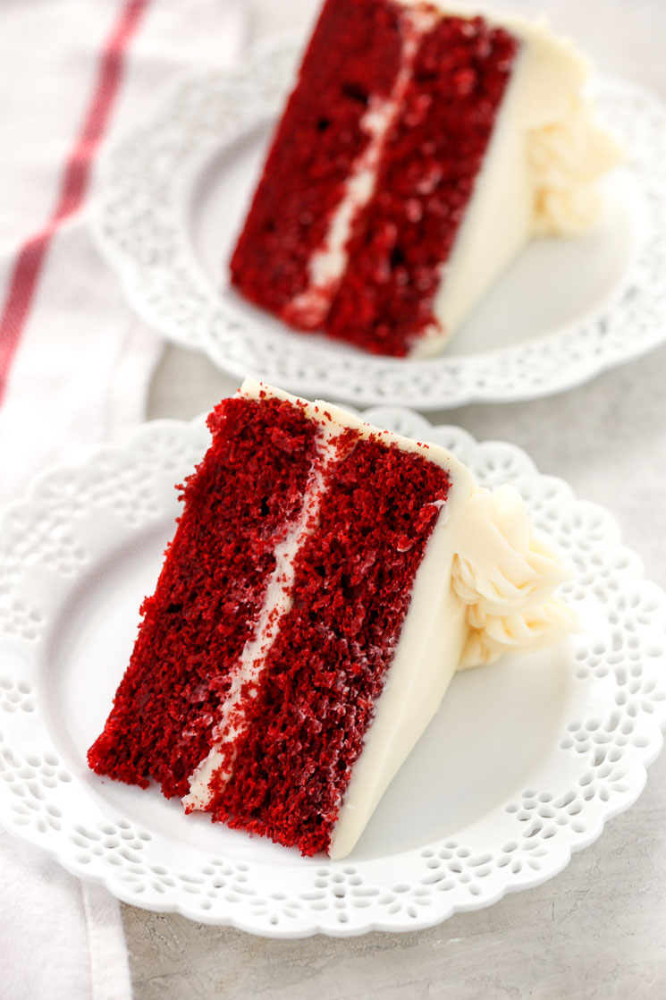
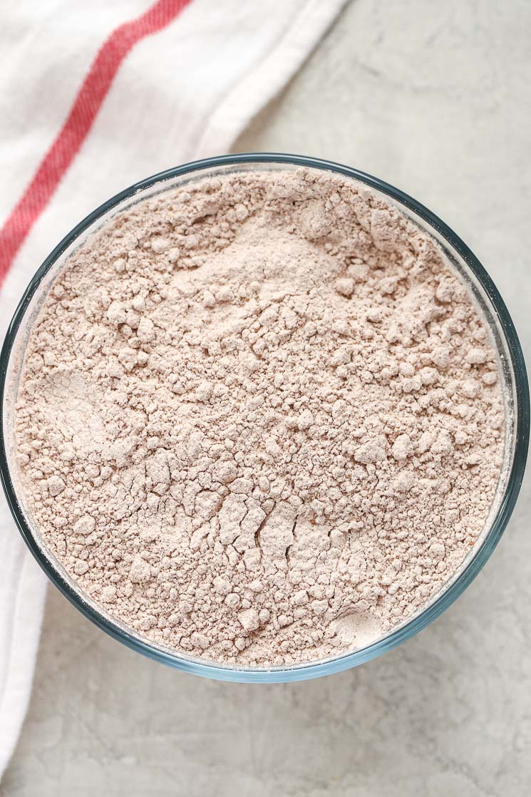
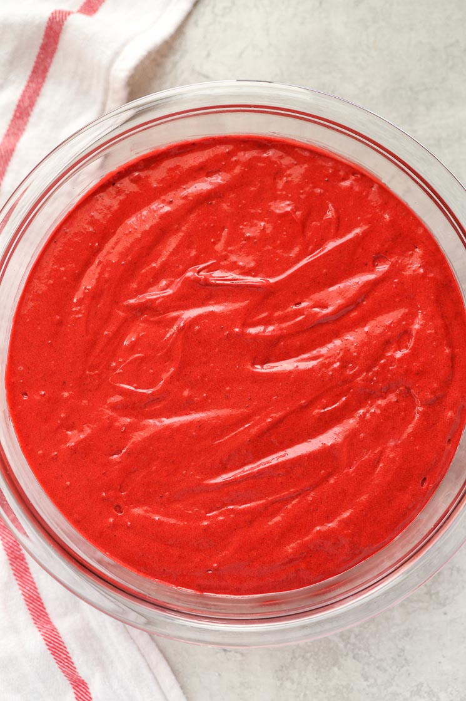
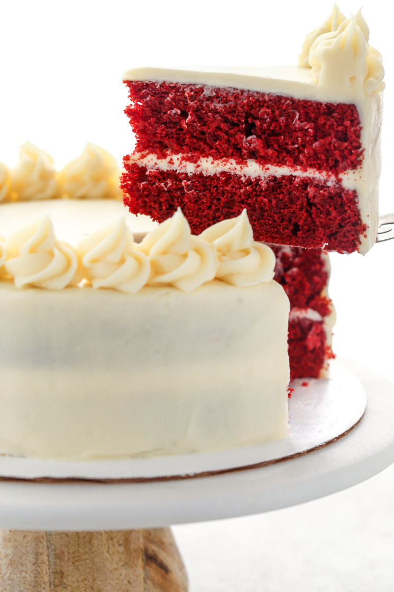

The Best Red-Velvet Cake Recipe
Ingredients:
Flour,cocoa powder,baking soda,salt,butter,sugar & red food color.
How to make this:
To make this red velvet cake, you’ll start by whisking together your dry ingredients: cake flour, unsweetened cocoa powder, baking soda, and salt. I suggest using cake flour because it has a lower protein content than all-purpose flour which creates a softer, lighter cake. When it comes to cake flour, two of my favorite brands are Pillsbury Softasilk and Swans Down.
There’s also 1/4 cup of unsweetened cocoa powder in this cake so the cake isn’t super chocolatey, but it has a hint of chocolate that is expected in red velvet cakes. Once you’ve whisked together the dry ingredients I suggest sifting them as well to remove any lumps of cocoa powder and help keep the cake light.
Then, mix up the wet ingredients starting with some unsalted butter and granulated sugar. I suggest creaming the butter and sugar together for about 4-5 minutes. Why? Creaming the butter and sugar together until light and fluffy incorporates more air into your cake batter creating a softer, lighter cake.
Once the butter and sugar are creamed together, you’ll beat in two eggs until well combined. Then mix in the rest of the wet ingredients: some oil, red food coloring, vanilla extract, and distilled white vinegar. The oil helps to keep the cake incredibly moist, so I use a combination of butter and oil in this cake.
Once you’ve mixed up the wet ingredients, you’ll alternate mixing the dry ingredients in three additions with some buttermilk. Alternating the dry ingredients with the buttermilk helps to prevent overmixing the cake batter which can lead to a denser cake. If you don’t have any buttermilk on hand, you can make your own using my homemade buttermilk substitute.
Once the cake batter is mixed up it will be a beautiful bright red color like the picture above. Then, just divide the batter between two 9-inch cake pans and bake them for about 30 minutes. If you want to make it easier to get the cake layers out of your pans I suggest using parchment paper. I use these parchment liners from Wilton and LOVE them, they’re perfect for this recipe too!
Once the cake layers are baked and cooled, you’ll mix up the frosting. I used my favorite cream cheese frosting for this cake and increased the amount to have enough to frost it. If you want to try another frosting my vanilla buttercream frosting would be delicious too!
Then, just level your cakes and frost it however you like. I used the Wilton 1M piping tip for the swirls on top of this cake.